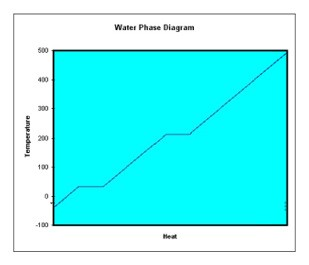

| Feature Article - November 2002 |
| by Do-While Jones |
If you want to know why things happen in the social or political world, it is usually a good idea to "follow the money." To find out why things happen in the physical world, you have to "follow the heat."
Last month we laid the foundation for an understanding of thermodynamics. We explained the difference between heat and temperature. (A difference in temperature is what causes heat to flow.) We said there is a fixed amount of heat in the universe. Heat is neither created, nor destroyed. Heat is "organized" when there are some places that are hotter than others. Heat always tries to disorganize itself by moving from a hot place to a cold place, spreading itself out as evenly as possible. Entropy is a measure of how evenly spread out the heat is. (In other words, entropy is a measure of heat disorder.) As heat flows from one place to another, it either does work, or wastes the opportunity to do work. When heat flows, it increases the entropy of the entire universe. Natural processes cannot violate these laws.
Now we want to look at how these abstract concepts explain practical realities. We are going to start to apply thermodynamics to everyday life.
They say that "money makes the world go 'round." That isn't entirely true because some people do things for noble reasons (love, duty, honor, etc.) But, for the most part, people do things for money. You probably go to work because somebody gives you money. Money flows from your employer into your bank account. The grocer gives you food because money flows from your pocket to his. The farmer gives food to the grocer in exchange for money. The farmer grows the food because he expects to get money for it. Everything happens because money flows from one place to another.
Sometimes the flow of money isn't obvious. For example, Science Against Evolution doesn't pay any employees, but I edit the newsletter anyway. Although no money flows from Science Against Evolution to me, there is still a money flow that allows the work to happen. If I did not have a house with a closet full of clothes, and a refrigerator full of food, and a job which allows me to pay the bills, I would not be able to do this work. I would be too busy begging or trying to find a job to edit this newsletter. It is the ample flow of money from my day job as an electronic engineer which allows me to edit Disclosure.
Business people are successful if they can figure out how money will flow (whether that path is obvious or not), and can figure out how to take advantage of it.
In the physical world, absolutely everything happens because heat flows from one place to another, without exception. Every physical process involves the transfer of energy, and that energy can always be expressed in terms of heat. Successful engineers figure out how heat will flow, and how to take advantage of it.
The relationship between heat and energy is like the relationship between dollars and money. U.S. dollars aren't exactly the same as money. Money can take the form of pounds, francs, lira, pesos, treasury bills, stocks, bonds, time, real estate, or other forms too numerous to mention. But all of these forms of money can be expressed in terms of dollars. So, the American dollar is a convenient way of expressing monetary value.
Heat isn't exactly the same as energy. Energy can be kinetic energy, potential energy, chemical energy, or nuclear energy. But all these forms of energy can be expressed in terms of an equivalent amount of heat. Therefore, heat is a convenient, universal currency of energy.
With that explanation, we are almost ready to give an example which shows how heat flow makes things happen.
Many of you have heard evolutionists use what we refer to as "the stupid snowflake argument." It appeared recently in the popular press.
| This argument [that the second law of thermodynamics argues against evolution] derives from a misunderstanding of the Second Law. If it were valid, mineral crystals and snowflakes would also be impossible, because they, too, are complex structures that form spontaneously from disordered parts. 1 |
You can also find the argument stated less coherently on some evolutionists' web sites. For example,
| OK, the appearance of life had to be miraculous, since it increases order (decreases entropy), and that violates the second law of thermodynamics (not!). In that case the formation of every single snowflake that has ever existed (imagine how many!) must be a discrete miracle, and not a natural process at all, since a snowflake is much more "orderly" and contains more "information" than the vapor or droplets from which it forms. A more likely answer: neither is miraculous and neither offends the thermodynamic sensibilities of nature. Everything in this world that works, works by temporarily and locally reducing entropy. Maybe the real miracle was performed by God when He designed a universe with natural laws that permit such wonders as snowflakes to form and hummingbirds to evolve, without His constant tinkering. [emphasis supplied] 2 |
The web site has it backwards. Everything in this world that works, works by permanently increasing entropy globally, because that's what happens when heat flows. Everything happens because heat flows. If the Second Law really says that snowflakes cannot occur naturally, then the first snowfall disproves the Second Law. If, on the other hand, the Second Law doesn't say that it is impossible for snowflakes to occur naturally, it proves that evolutionists are the ones who don't understand the Second Law.
Snowflakes obey the Second Law. To see why, just "follow the heat." If you follow the heat flow, you will see why snowflakes form. Entropy increases every step of the way.
But there is one more thing you need to know before we can follow the heat flow. There is heat flow which is associated with the change of phase between solid and liquid, and between liquid and gas.
Suppose you take a pan of water, stick a thermometer in it, and chill it well below freezing. Then put the pan of water over a constant flame. Since the size of the flame doesn't vary, the amount of heat transferred to the pan is constant (neglecting the loss to the air around it).
|
As the flame adds heat to the pan of ice at a constant rate, observe the thermometer reading. The temperature increases at a constant rate up to 32 degrees F (0 degrees C). Then something unexpected happens. The temperature remains at 32 degrees despite the fact that heat is still being added. That is because it takes heat to melt ice. Ice at 32 degrees turns into water at 32 degrees. The 32-degree water has absorbed heat from the 32-degree ice, and has more kinetic energy. The temperature of the ice and water in the pan will remain at 32 degrees until all the ice melts. Then, the temperature of the water will increase at a constant rate as more heat is added. |
 |
|---|
When the temperature reaches 212 degrees F (100 degrees C), it levels off again. The 212-degree water turns into 212 degree steam. Again, it takes heat to cause this change of phase. Once all the water boils away, the temperature of the steam increases as more heat is added.
Theoretically, you could do the experiment in reverse, but it is difficult to do in practice. If you could figure out a way to gather up 400-degree steam, and suck heat out of it at a constant rate, its temperature would decrease at a constant rate until it got down to 212 degrees. Then it would remain 212 degrees as it condensed into water. After all the steam condensed, the temperature of the water would decrease constantly to 32 degrees, then remain there as long as water was freezing. After all the water freezes, the temperature would continue to decrease steadily from 32 degrees down to absolute zero (if you had some way of continuing to suck heat out of it).
Now, at last, you know everything you need to know to understand why snowflakes form.
The Sun is much, much hotter than the ocean. Therefore, heat flows from the Sun into the ocean because temperature difference causes heat to flow. As this happens, entropy increases because the heat is more evenly distributed between the Sun and the ocean.
Some of the water molecules near the surface of the ocean absorb enough heat to change phase. Those molecules turn into warm water vapor, cooling the sea and warming the air. Entropy increases as heat flows from the warm water to the colder air.
Wind blows the water vapor high into the atmosphere, where heat flows from the warm water vapor into the cold surrounding air. As it does this, the water vapor condenses to water droplets giving up even more heat. If the surrounding air is cold enough, the water droplets will give up still more heat by changing from the liquid phase to solid phase (i.e., snow). Heat has flowed from the warm surface of the sea high up into the cold atmosphere, increasing the entropy by more evenly distributing the heat.
The air in the upper atmosphere radiates the heat (which it acquired from the water vapor as it condensed and froze) into space, which is even colder than the atmosphere. Heat is now more evenly distributed between the upper atmosphere and space, increasing entropy.
When the snowflakes fall on warm ground, heat will flow from the ground into the snow, causing it to melt. Entropy of the ground and the (melted) snow increases as heat flows to the cold snow from the warm earth.
Every step in the snowflake life-cycle obeys the laws of thermodynamics. Heat is neither created nor destroyed. Heat flows from a hot place to a cold place. Heat becomes less well organized because it is more evenly distributed throughout the universe as cool places warm up, and warm places cool down. Snowflakes don't violate the laws of thermodynamics. There is nothing miraculous about it.
Mineral crystals form for the same reason snow crystals form. Heat is released as minerals in solution form solid crystals, equalizing the temperature all around, increasing entropy.
So, evolutionists who claim that snowflakes and mineral crystals decrease entropy, proving evolution can happen, are wrong on two counts. First, they are wrong because entropy of the crystal and the environment around the crystal actually increases, in accordance with the Second Law. Second, the formation of crystals has absolutely nothing to do with the origin of life, or the information in the DNA molecule. The Second Law of thermodynamics really does explain why life, and DNA molecules, cannot form spontaneously. But that explanation will have to wait until next month. (How's that for a cliff-hanger?)
| Quick links to | |||
|---|---|---|---|
| Science Against Evolution Home Page |
Back issues of Disclosure (our newsletter) |
Web Site of the Month |
Topical Index |
Footnotes:
1
John Rennie, Scientific American, July 2002, "15 Answers to Creationist Nonsense", page 82
(Ev+)
2
http://riceinfo.rice.edu/armadillo/Sciacademy/riggins/things.htm#snowflakes
(Ev+)